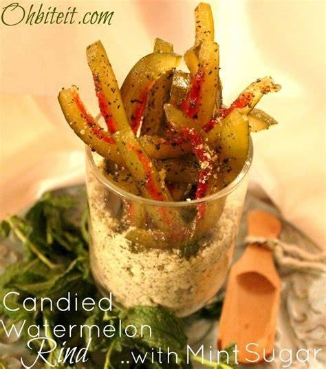

Candied Watermelon Rind
Ingredients
• 16 C of cubed skinless (outer green skin) watermelon rind
• 1/2 tsp of ground yellow mustard seed
• 8 C of white superfne cane sugar
• 3/4 C of fne ground kosher salt
• 4 C of organic apple cider vinegar
• 12 crushed whole cinnamon sticks
• 2 Tbs of whole cloves
• 12 C of bottled water
Directions
1. Trim the hard green outer skin off the watermelon rinds and cut rinds into small one inch cubes.
2. In a large mixing bowl mix the rinds, bottled water, and salt until salt dissolves. Seal bowl, and store in the fridge over night.
3. The next day, drain water from the bowl, refll with fresh water and dump into a large saucepan. Bring contents to a boil and cook for a half hour. Drain water, add apple cider vinegar and sugar. Set aside.
4. In a cheesecloth bag add in cloves, ground yellow mustard seeds, and crushed cinnamon sticks. Tie the bag and add to sugar and vinegar mixture. Bring mixture to a boil, remove from heat and let stand for 15 minutes.
5. Then add the boiled watermelon rind and boil again in vinegar mixture until rind is completely transparent and vinegar thickens with the sugar, about 50 minutes.
6. Remove spices from mixture then spoon rind and syrup into canning jars, leaving a half inch head space. Process jars by letting them stand in boiling water for 10 minutes.
